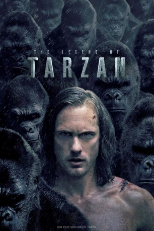

Alternativ: The Legend of Tarzan gesehen am 04.12.2016
gesehen am 04.12.2016
 
 IMDB-Wertung: 6.4 / 10
IMDB-Wertung: 6.4 / 10  Metascore:
Metascore: 
Es sind schon viele Jahre vergangen, nachdem Tarzan den afrikanischen Dschungel hinter sich gelassen hat. Jetzt lebt er unter seiner neuen Identität als britischer Adliger John Clayton III, Lord Greystoke, mit seiner geliebten Frau Jane ein standesgemäßes Leben in der Zivilisation. Eines Tages erhält er einen Auftrag direkt vom Parlament: Als Sonderbotschafter für Handelsfragen soll Tarzan zurück in den Dschungel vom Kongo geschickt werden. Noch ahnt er allerdings nicht, dass er dabei nur als Schachfigur in einer gefährlichen Intrige aus Rache und Habgier missbraucht werden soll, die der Captain Leon Rom aus Belgien eingefädelt hat. Aber auch er und die anderen Drahtzieher haben noch keinen blassen Schimmer, was für eine tödliche Lawine sie mit ihrem diabolischen Plan ins Rollen bringen.
Jahr: 2016
Dauer: 109 Minuten
FSK: 12
Land: England Studio: Warner Bros.Tonspuren: DD5.1 - ,
Untertitel: Deutsch,
Auflösung: 1080p (1920x1080) Größe: 6993 MB
Genre: Action, Drama, Abenteuer, Liebe
Regisseur: David Yates
Drehbuch: Cyril Gely
Soundtrack:
Darsteller:
Datei: X:\2016(G-M)\Legend of Tarzan (2016, FSK12, 1920x1080) 3D.mkv seit 30.11.2016
Festplatte: HD 2016(A-Z)
 Es gibt insgesamt 164 Filme in der Gruppe '2016(G-M)'
Es gibt insgesamt 164 Filme in der Gruppe '2016(G-M)'